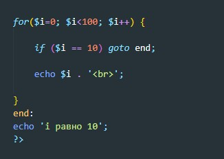

Оператор goto используется для перехода в другую часть программы. Место, куда необходимо перейти указывается с помощью чувствительный к регистру метки, за которой ставится двоеточие, после оператора goto указывается желаемая метка для перехода. Целевая метка должна находиться в том же файле, в том же контексте. Имеется в виду, что вы не можете ни перейти за границы функции или метода, ни перейти внутрь одной из них. Вы также не можете перейти внутрь любой циклической структуры или оператора switch. Но вы можете выйти из них, и обычным применением оператора goto является использование его вместо многоуровневых break.
